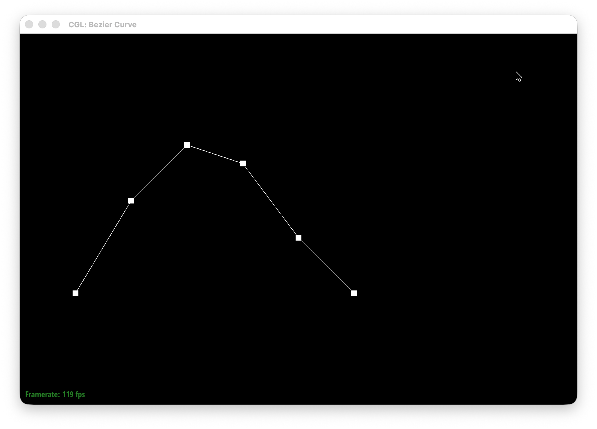
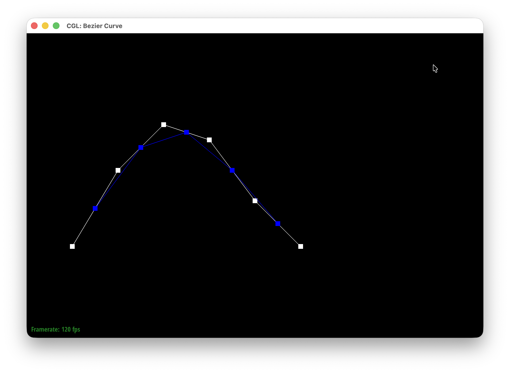
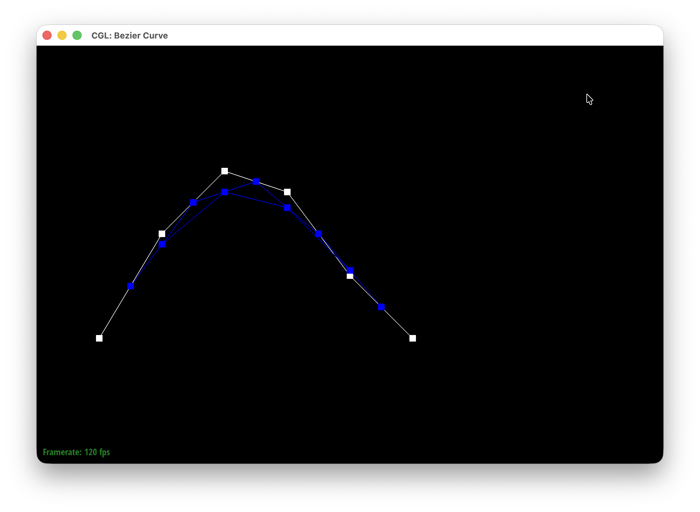
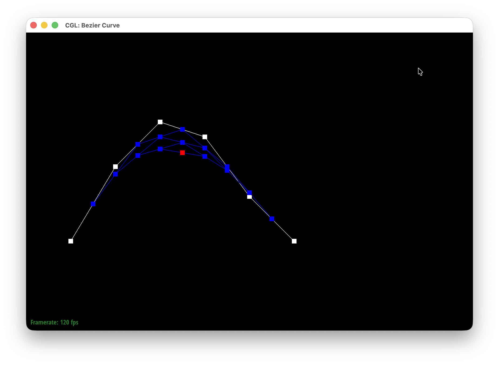
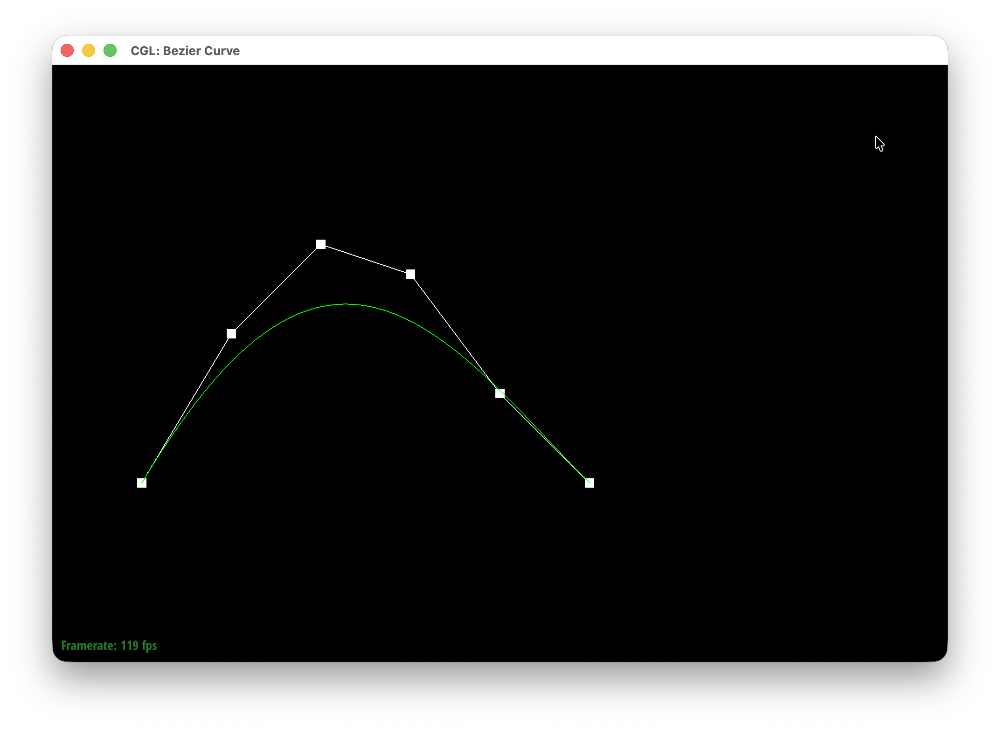
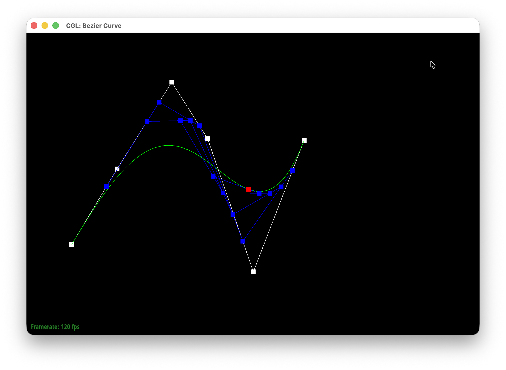
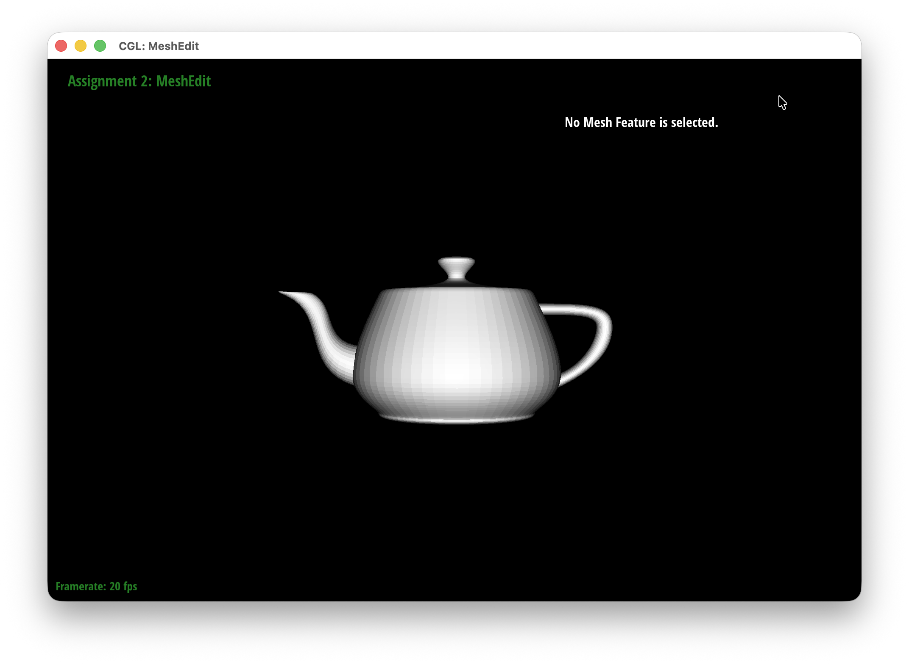
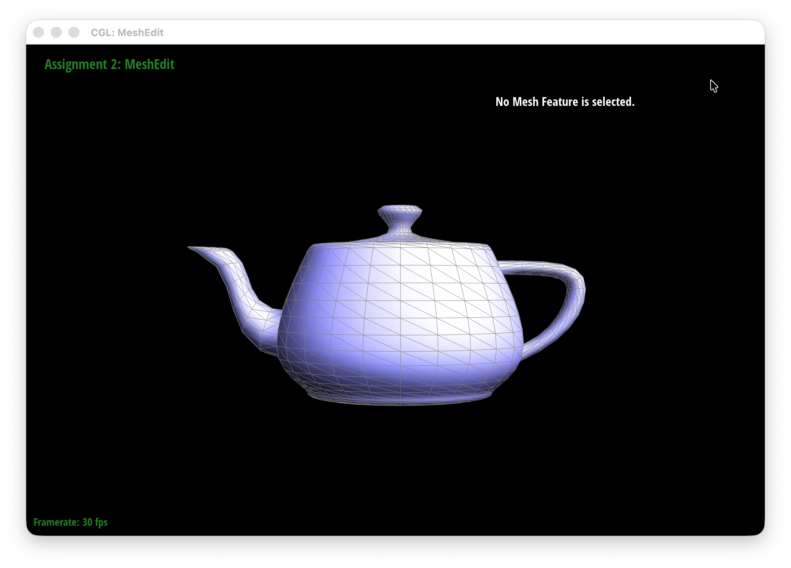
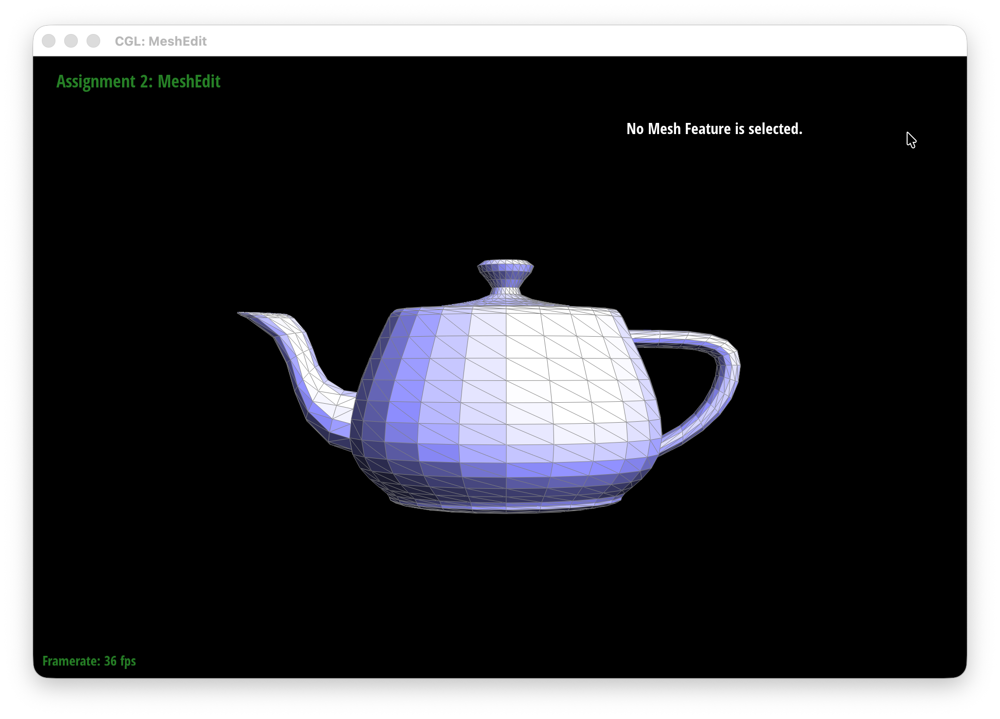

I implemented de Casteljau's algorithm by taking each pair of neighboring control points and linearly interpolating between them using the parameter t. This gives us a new set of points with one fewer point than the previous level. I repeated this process until only one point remained, which is the point on the Bezier curve at t.
In evaluateStep(), I loop through the control points and use
\[
p_i' = (1-t)p_i + tp_{i+1}
\]
to calculate each intermediate point. I store these points in a new
vector and return it. Each call to evaluateStep() only
computes one level of the algorithm.
Starting with six control points, I applied de Casteljau's algorithm one level at a time. Each level takes a linear interpolation between every pair of adjacent ponits, so the number of points decreases from 6 to 5, then 4, 3, 2, and finally 1.





I also moved several of the original control points and changed t by scrolling. This changed the shape of the curve and moved the evaluated point along the curve.

For Bezier surfaces, I extended the 1D de Casteljau algorithm by applying it in two directions. I first evaluated each row of control points at u, which gives us one point for each row. I then treated these points as a new Bezier curve and evaluated it at v to get the final point on the surface.
I used the same evaluateStep() idea from Part 1, but with 3D points. I used linear interpolation on each pair of neighboring points and repeated the process in evaluated1D() until there was only one point left. For evaluate(), I first evaluated each row using u, then used those resulting points to evaluate the surface using v.

I implemented the vertex normals by walking through all of the faces surrounding each vertex. For each face, I used the two edges starting at the vertex and took their cross product to get the face normal. Since the magnitude of the cross product is proportional to the area of the triangle, larger faces contribute more to the final normal. I added these contributions together and normalized the result to get the vertex normal.
|
|
 |
I implemented edge flipping by first finding the six half-edges surrounding the two faces adjacent to the selected edge. The two half-edges of the selected edge are twins, and I used next() to find the other half-edges belonging to each face. I then changed the selected edge's endpoints to the two opposite vertices, replacing the original diagonal with the other diagonal of the quadrilateral. Finally, I updated the next() pointers and face pointers so that the six half-edges form the two new triangular faces. I also check whether the selected edge is a boundary edge and leave it unchanged if so.
|
 |
|
During my implementation and debugging journey, the half-edge pointers became "pointer soup" and my first attempt at the edge flip caused a hole to appear in the mesh. To debug, I ended up drawing the two triangles and all six half-edges out on a piece of paper and tracing their directions. This helped me realize that some of my next() pointers were connected the wrong half-edges and that I as getting one of the opposite vertices from the wrong half-edge.